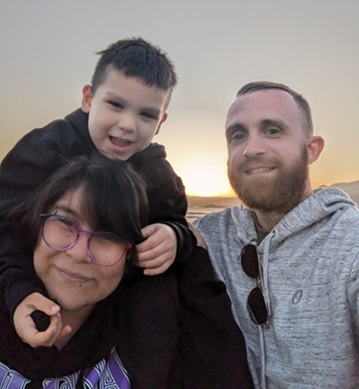

Thanks for visiting my page! My name is Dak (Dakota) Brown and I'm a 32 year old male from the technologically bustling Bay Area, California. I started my Computer Science journey in the fall of 2017 when I took the Introduction to Programming with C++ course at my local community college, Diablo Valley College (DVC) in Pleasant Hill, CA. The next year I took Advanced Programming with C++ along with a bunch of general education classes. Then in 2019 my first son was born, so I took a hiatus from school and resumed in the Fall semester of 2020 and completed the three other required CS courses at DVC, Assembly Language Programming, Object Oriented Programming, and Program Design and Data Structures and finally received my Associate's Degree in Computer Science. After that, I ventured into world of Accounting courses at DVC because I was extremely interested in stock trading at the time and quickly realized that Accounting was not my cup of tea. After completing a few Accounting courses, I dropped that course of action completely and went back to where I belong in Computer Science. In the Spring of 2023, I signed up to Southern New Hampshire University and got to work on my Bachelor's in compsci. Along the way I took some really easy classes like Software Testing, Automation, and Quality Assurance and Operating Platforms. I took some classes that were more challenging like Computational Graphics and Visualization and Full Stack Development. And I took some really interesting classes like Software Security and Current and Emerging Trends in Computer Science (which dealth exclusively with artificial intelligence). The course's assignment that I used for my Capstone project, Mobile Architecture and Design was somewhere in the middle: not difficult, but not a walk in the park either. It taught me a lot. Now with this capstone project almost complete as I type this, I'm about a week away from completing all required coursework to finally earn my Bachelor's degree in Computer Science. I'm incredibly excited; not just to receive the degree, but to finally get started in the tech workforce. It took me 7 years to get here from where I started since I was working full time the entire way and having my first child in the middle, but looking back it was a blast, and looking ahead staring the completion of the program in the face, it was all worth it.
If you're still here after listening to me drone on about my Computer Science journey, congratulations and thanks! Up along the top navigation bar, you can explore my capstone project. As I said earlier, this is all based off of the final project I completed for my Mobile Architecture and Programming course and consists of 3 primary enhancements I made to it to demonstrate my competency in Software Engineering, algorithms, and databases. It was originally a simple, bare-bones weight tracker app and is now enhanced to provide more valuable functionality to the user. Much greater detail is available in the links in the navbar.
